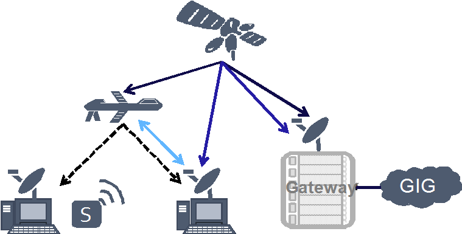
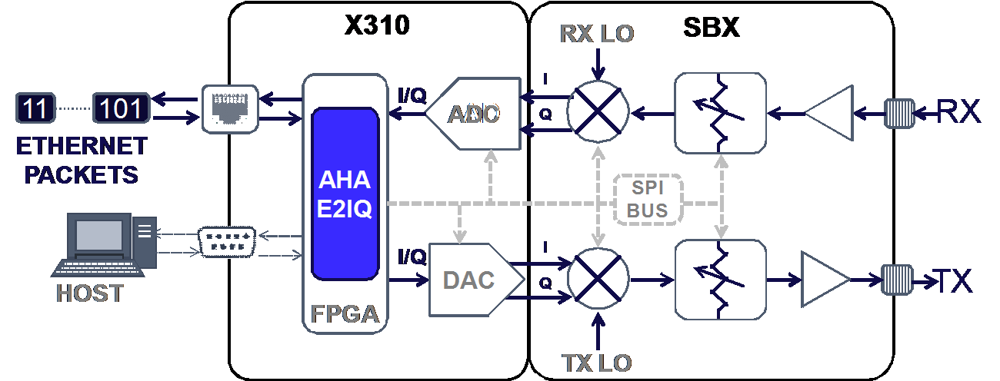
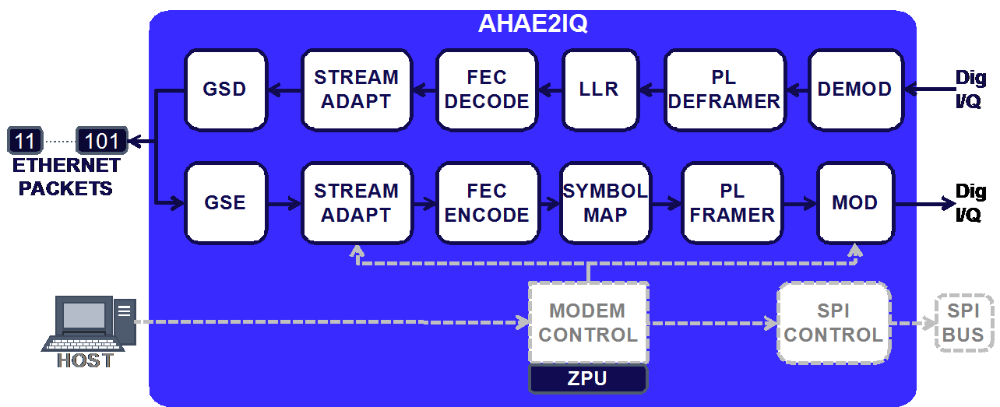
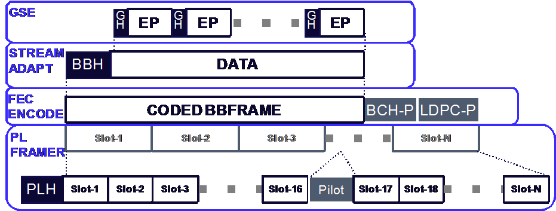

DVB-S2X调制解调器原型
原作者：Juan D. Deaton, Brian A. Banister, Tom Hansen, Tony Summers, Adam Bacon, Tim Halvorson, Ryan Hoffman
机构：AHA产品集团 - Comtech EF Data公司
Ettus研究使用产品：X310，SBX
挑战：创建一个DVB-S2X调制解调器的工作原型。
介绍
随着增加额外的监视能力，和战斗方面，监测和维护，指挥，控制，通信，计算机，情报，监视和侦察（C4ISR）已经成为比例更依赖于卫星通信（SATCOM）。因此，商业SATCOM提供国防部（DOD）的总容量的80％[1]。为此，高通量卫星（HTS）SATCOM已成为一个关键的兴趣。在2014年10月批准，数字视频广播卫星第二代扩展（DVB-S2X）提供的容量和频谱效率的下一代增加[2]。虽然DVB-S2X标准是针对卫星通信，它可以支持其他的C4ISR环节，如弯管和空中资产的直接连接。图1显示了C4ISR通信的例子链接适用于DVB-S2X。
图1：DVB-SX提高频谱效率用于C4ISR通信点至点的应用程序
为了证明DVB-S2X的性能优势，我们实现了我们对DVB-S2X标准设计，4709 E2IQ核心，在Ettus X310 [3]软件定义无线电（SDR）。使用这种SDR平台和我们E2IQ核心，我们表明在加性高斯白噪声（AWGN）信道的真实的调制解调器的性能。据我们所知，我们是第一批实施新的DVB-S2X标准到一个平台SDR。通过这些努力，我们的目标是展示给用户的C4ISR下一代系统中使用我们的E2IQ核心的灵活适应性。
硬件配置
我们的实现是建立使用Ettus X310 SDR平台[5]和SBX-120子板。示出我们的硬件结构的图在图2，SBX-120子板捕获提供RF前端，其包括用于接收和发送路径的本地振荡器，混频器和衰减器。在SBX-120和X310，模拟之间的接口的I / Q样本/缩小X310的处理。在Ettus X310，我们的设计包括赛灵思的Kintex-7现场可编程门阵列（FPGA），数字模拟转换器（DAC）和模数转换器（ADC）。我们的调制解调器设计中，E2IQ，核心放置在FPGA中。我们的主人，通过串行外设接口（SPI）总线，校准和配置DAC，ADC，和SBX-120前端。外部数据和控制到FPGA，我们使用分别以太网和RS-232接口。
图2：X310和SBX-120 SDR的硬件框图。
我们E2IQ设计包括两个主要部分：控制和数据流。我们E2IQ核心的框图在图3中由主机驱动的显示，控制流程的目的是为了配置和校准编码器，调制器，和射频前端。调制解调器控制块设计是建立在Zylin CPU（ZPU），这是一个小型的嵌入式处理器上。凭借ZPU，调制解调器控制模块能够执行对ACM需要算法，增益控制等实时功能。为此，调制解调器控制块指示流适配块MODCOD用于传输哪些。此外，调制解调器控制配置调制块使用适当的符号率。流适配块向下传递MODCOD信息到后续模块，以指示块大小，编码率和调制以用于传输。最后，中心频率和发射功率水平可以通过使用调制解调器控制算法SPI总线或主机来配置。
图3：我们的DVB-S2X实施，E2IQ框图
该数据流路径转换数字I / Q成以太网数据包，反之亦然。示出的以太网报文到的I / Q码元封装的图示于图4.对于以太网到I / Q或传输流，以太网数据包首先被调制解调器接收的，并使用通用流封装（GSE）协议[成帧6。的GSE分组然后用基带（BB）标题尚未指示的ACM控制，滚降因子，和其它的帧的控制信息。整个BB帧是根据MODCOD，然后沿该前向纠错（FEC）编码器传递的输入块尺寸。以编码BB帧，DVB-S2X使用的外BCH码和用内LDPC码1.编码后，将FEC帧被映射到由物理层（PL）成帧器被处理的符号和时隙。通过自身的头球攻门，PL成帧器创建帧其次是信息的使用给整个FEC帧解码的开始。此外，PL成帧器定期插入保持同步试点插槽。作为对PL处理每个符号，数据被再调制成数字I / Q信号并将其发送到RF前端。
图4：以太网数据包（EP）制定通过在E2IQ核心的各个功能模块使用的I / Q符号的插图。
在接收路径上，解调器，与PL解帧器工作时，查找的PL帧的开始和PL报头，以确定MODCOD和开槽FEC帧的大小。从检测的符号信号测量值随后用作用于对数似然比（LLR）的计算以及FEC帧的后续解码的输入。流适配模块和GSE去帧块然后取出BB头和解封回以太网数据包，分别为。
在E2IQ和X310调制解调器性能演示
为了表征我们的DVB-S2X设计的性能，我们配置为两个E2IQ FEC芯和Ettus SDR平台环回结构的一个调制解调器。对于E2IQ核心的性能特征，我们建立在FPGA上的AWGN信道模型，并插入FEC编码器和解码器内核之间的通道。然后将已知的伪随机数序列被产生并馈入的FEC编码器，它通过AWGN信道和返回到FEC解码器。当执行错误的对SNR值有统计学显著号码和相关联的数据点，我们计算对于所有的MODCOD 10-5块错误率（BLER）[2]。 类似于E2IQ FEC芯的表征，我们Ettus SDR的TX被连接到一个载波 - 噪声发生器，它提供了一个可编程的SNR在AWGN信道模型来评估每个MODCOD。所述RX路径返回到从发电机相同的调制解调器。在相同的方式，对FEC表征，所述TX开始发送在增量SNR值一个已知的伪随机数序列。从这些实验中，在10-5 BLER相应的SNR被确定。在我们的Ettus SDR的设计，我们使用性能比较中档MODCODs。的E2IQ芯和Ettus SDR执行结果显示在图5。

图5：E2IQ FEC核心（深蓝色）和Ettus实现SDR（品红色）与DVB-S2X规范（浅蓝色）的比较。两种实现有超过测试MODCODs范围小的性能差距。
正如图5所示，E2IQ芯和DVB-S2X规范之间的性能差距小。平均起来，E2IQ性能差距为0.1分贝。在实现SDR，0.29分贝平均业绩差距也密切跟踪对DVB-S2X规范。这表明E2IQ核心设计和实施上Ettus SDR的高品质。最后，该设计的SDR，最大符号速率和最频谱效率MODCOD是72 MSPS和4.5位/秒/赫兹，即324 Mb / s的最大数据速率。
结论
通过我们的实验和结果，我们已经表明，E2IQ芯和X310是DVB-S2X说明书的低损耗实现。此外，鉴于Ettus SDR是一个多用途平台，E2IQ芯是柔性的可以有效地适用于创建用于各种C4ISR应用的高性能数据调制解调器。从我们的性能演示，我们已经表明，C4ISR应用程序可以利用DVB-S2X垫款经营范围和吞吐量的增加。
参考
[1] R. Lober，“为什么军方需要商业卫星技术，”国防部一，2013年9月。
[2]数字视频广播，“第2部分：DVB-S2扩展（DVB-S2X），”ETSI EN302307-2，2014年10月。
[3]美国国家仪器，“Ettus研究发布软件无线电平台之上的Kintex-7 FPGA，”新闻稿，2014年2月。
[4] AHA产品集团，“DVB-S2X数字调制解调器的以太网IP核，”AHA4709E2IQ产品简介，2015年4月。
[5] Ettus研究，“USRP X300和X310 X系列”，产品规格，2014年。
[6]数字视频广播，“数字视频广播（DVB）;通用流封装（GSE）协议，”ETSI TS 102606，2007年10月。